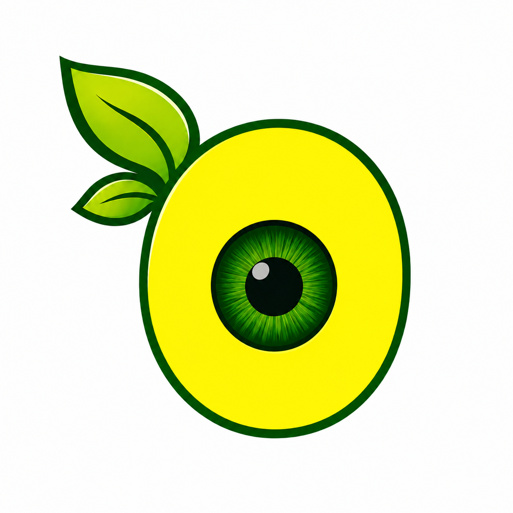

OrchardEye
AI-Powered Pheromone Pest Trap & Monitoring

Innovative Pest Control & Analytics
OrchardEye is a state-of-the-art agricultural monitoring platform that leverages smart pheromone traps and computer vision to identify, count, and track pest infestations in real-time. Protect orchards by predicting outbreaks before they spread.